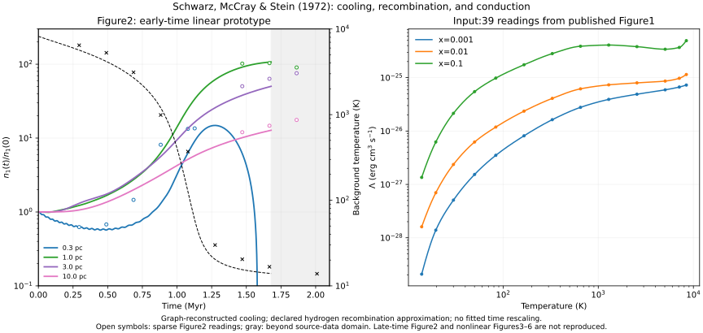

Chapter 03 / Schwarz, McCray & Stein (1972) / Linear prototype
Watch the perturbations grow.
Cloud formation can begin while the surrounding gas cools, rather than departing from steady thermal equilibrium. Here the background temperature and ionization evolve together with density perturbations at four wavelengths.
First target: the early-time part of Figure 2. The linear equations include conduction and recombination. Cooling is reconstructed from Figure 1, rather than independently recovered from every atomic rate. The run stops at the input-data boundary, about 1.68 Myr. Late-time Figure 2 remains unfinished. A separate nonlinear Lagrangian prototype now follows the 3 pc, 10% perturbation into condensation.



Initial conditions: n(H) =0.3 cm⁻³, T =8,200 K, x =n(e)/n(H) =0.05; neutral He/H =0.1. Wavelengths are 0.3,1,3,10 pc. The historical conduction prescription is K(T) =2,500√T in cgs units. No continuing heating is applied.
The 0.3 pc mode initially decreases, showing short-wavelength conduction damping. Within the computed window it later reaches about 14.8 times its initial amplitude, while the 1 pc mode reaches about 107. The latter maximum occurs at the domain stop and is not an established peak. These are normalized linear amplitudes, not nonlinear cloud density contrasts.
The original curves are not matched exactly. The report gives separate log-RMS discrepancies and scored-point counts for temperature and each wavelength. Points past the domain stop have no model prediction. These descriptive differences are not numerical pass tolerances.
Equations (16)–(18) evolve uniform cooling and recombination. Equations (19)–(24) evolve relative density, pressure, velocity divergence, and ionization perturbations; the equation of state supplies the temperature perturbation. The coefficients change with time, so a single constant exponential growth rate is insufficient.
d ln x₀/dt = −1/τR
τC = (1.1+x₀)kT₀ / [n₀(γ−1)Λ]
τR = 1/[n₀x₀α⁽²⁾(T₀)]
The pressure perturbation contains the conduction term in equation (19). Density amplitudes are normalized to n₁(0) =1; the actual perturbation may be arbitrarily small. Pressure, velocity and relative ionization perturbations initially vanish. This declared initial-mode choice has not been confirmed as the unique Figure 2 initialization.
DOP 853 and Radau agree on the computed evolution. Equation (19) is also compared with a centered-difference Jacobian of the original primitive pressure equation, including the changing background normalization.
The 39 Figure 1 readings cover x =0.001,0.01,0.1 and T ≈13.93–8,429.74 K. PCHIP interpolates logΛ(logT), with Λ piecewise linear in ionization fraction. A logarithmic-ionization alternative changes the stopping time to about 1.51 Myr, illustrating reconstruction sensitivity.
The accepted solution stops at the lowest supported temperature,13.93 K, after 1.679 Myr. It is not continued through an invented cold cooling law. Raw pixels, crop origins, calibration ticks and source hashes accompany the input. Figure 2 readings use the 0–2 Myr ticks bracketing the sampled interval; a single exact affine scale is not assumed for the slightly distorted full scan. Reading envelopes are practical limits, not statistical confidence intervals, and there is no independent second digitization.
H recombination uses Hjellming’s (1966) excited-state approximation; the exact fit used by Schwarz and collaborators remains unidentified. Nonpositive linear amplitudes remain in the CSV but are omitted from the log plot; they do not mean negative physical gas density.
This paper adopts Fe/H =5 ×10⁻⁵, compared with 8 ×10⁻⁶ in the earlier FGH baseline. Neither FGH nor KI cooling is silently substituted. Jura & Dalgarno’s Table 1 supplies several electron-impact rates but does not alone specify all required neutral channels.
Equation (7) contains 1.4m(H) in the power-per-mass normalization; the Figure 1 caption omits 1.4. The implementation follows equations (7)–(9) without adjusting the time axis to improve agreement. The note added in proof on p.686 revises the discussion of trace-element ionization and cooling but supplies no replacement numerical rate table. See the source audit.
Save the five required files together. No PDF or network access is needed after dependency installation.
python 3 -m venv .venv
.venv/bin/python -m pip install -r requirements.txt
.venv/bin/python reproduce.pyAll 31 checks pass: calibration, interpolation, coefficient derivatives, the independent pressure-equation Jacobian, integrator agreement, valid domains, background evolution and conduction controls. These validate the stated implementation, not full historical reproduction.
First establish the cold cooling input, recombination fit and initial mode for the complete Figure 2. The nonlinear prototype and mesh study now computes profiles corresponding to Figures 3–6 in a periodic one-dimensional calculation with a 3 pc wavelength and 10% initially isobaric density modulation. This requires conduction, recombination, shock handling and grid/time convergence; a large linear amplification alone does not reproduce cloud thickness or density contrast.
Schwarz, McCray & Stein (1972): target paper ↗
Jura & Dalgarno (1972): cooling reference ↗
Code, explanatory text, and generated-data licenses remain unselected. Original paper rights are separate.